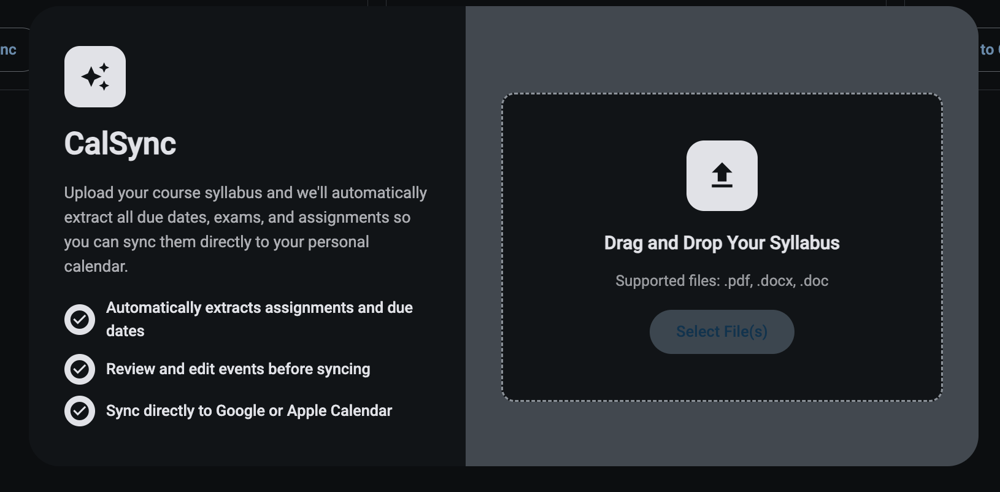
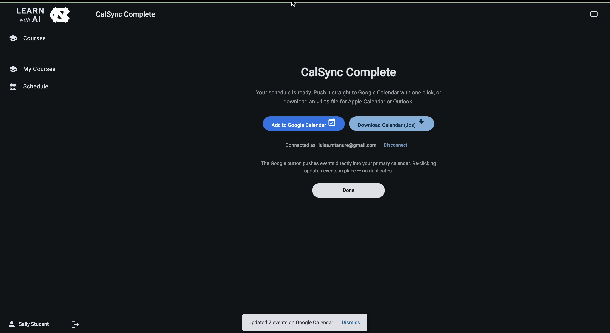

An AI-powered academic planning tool that extracts deadlines from course syllabi and syncs them straight to your calendar. No more manually copying due dates.
CalSync automates one of the most tedious parts of the start of a semester: turning syllabi into a calendar. Students upload a PDF or Word syllabus, and the system parses assignments, exams, and projects into structured, dated events. Instructors can also publish an "Official Syllabus" for a course, giving every student a shared source of truth without needing to upload anything themselves.
I led backend development, focusing on the parsing pipeline, the draft-to-confirmed event workflow, and calendar sync. Extracted events start as drafts so students can review and edit them before anything is written to their calendar, and duplicate detection keeps repeated syncs clean.
A FastAPI backend with an Angular frontend, using async workers for long-running syllabus parsing and Azure OpenAI for extraction.
Every semester I'd spend the first week manually copying deadlines from a stack of syllabi into my calendar, and I knew I wasn't the only one. CalSync grew out of that frustration. An excuse to build a real AI application pipeline end-to-end, from document parsing to a calendar a student actually trusts.
Syllabi are inconsistently formatted, so reliably extracting dated events required careful prompt design, request timeouts, and input-size validation around the AI pipeline. Keeping the draft-event review gate in front of every external calendar write was essential.

Syllabus Upload
Sync Complete